+ 04 animation
Point & Shoot Game
Point & Shoot Game
I tema 4 fik vi en viden omkring rent praktisk at anvende forskellige frontend-teknologier såsom CSS, javascript, Audition og IllustratorChrome/Firefox Inspector. Her udviklede vi CSS animation og javascript med forskellige funktioner såsom (addClass/removeClass),variabler, events (load, click, animationend,Animationiteration), betingelser (if-else) ogmath.random. I designprocessen fik vi færdigheder indenfor idegenering (mind map og krydsmetode) til udvikling af ide og visuelt koncept. Herunder udvikling af figur-elementer, spil-elementer, baggrundsdesign, UI-elementer, typografi, farver og komposition. Disse designelementer blev til i programmet illustrator. Designet blev dokumentet i form af moodboards, figur-skitser, layout-skitser og Style Tiles. Til sidst blev produktet gennem peer to peer, hvor ens studiekammerater gav feedback.
Pitch
Hjælp Surfer Joe med at redde havet fra at blive forurenet ved at samle genstandene op, der ikke hører hjemme i havet. Genstande, der forurener havet, er plastik, olie og PFAS. Derudover vil naturlige genstande som søstjerner, muslinger og vandmænd også dukke op, men de skal ikke samles op. Hvis du samler disse naturlige genstande op, mister du et point. Hvis 5 genstande, der ikke hører hjemme i havet, kommer i havet, er det game over. Du vinder, hvis du samler 10 genstande op, der ikke hører hjemme i havet.
animation
De onde og de gode genstande vil falde ned tilfældigt fra himlen og ned i havet, hvis de ikke bliver samlet op af spilleren. Hvis du klikker på en god genstand (forurenende elementer), vil den eksplodere og forsvinde, samtidig med at der afspilles en splash-lyd. Herved får du 1 point. Hvis du ikke klikker/samler de gode genstande (forurenende elementer), vil de komme ned i havet, og der vil afspilles en lyd, der indikerer, at du mister et liv. Derefter mister du 1 liv. Hvis du klikker på en ond genstand (havdyr), vil den eksplodere og forsvinde, samtidig med at der afspilles en trist lyd. Herved mister du 1 liv. Hvis du ikke klikker/samler de onde genstande, vil de blot falde ned i havet uden konsekvenser. Liv vil blive vist som hjerter, og tiden vil blive vist som et timeglas, hvor farverne forsvinder, efterhånden som tiden går. Game over-skiltet vil være et hav fyldt med forurenede genstande. Vindeskiltet vil være et rent hav.
Styletile
Som stilart valgte jeg kunsteneren Jeróme Masi. Masi skaber minimalistisk design i klare og skarpe farver. Farverne skaber en stærk kontrast i hans kunst. Den er baseret på en Bauhaus-stil, hvorfra der skabes grafiske figurer ved hjælp af simple former. Her bruges loven om forbundethed, hvor former tydeligt er forbundet og skaber en figur. I hans kunstværker er der meget negativt rum, og hovedfiguren er fokuspunktet. Baggrundene er ligesom Masi valgt i skarpe og næsten filur-is farver, der er med til at skabekontrast. Jeg har brugt rule of thirds til at placere min hovedfigur som focus point. Dertil brugt mørkere nuancer til at skabe et atmosfærisk perspektiv.

Designelementer
Karaktererne er tegnet med en solid streg. Søstjernen, muslingen, flasken og PFAS-tønden er symmetriske. Medusen og plastikposen er asymmetriske, da de er lavet af et blødere materiale sammenlignet med de andre karakterer. Alle karakterer har bløde og enkle former med få detaljer

Aktivitetsdiagram
Mit aktiveringsdiagram beskriver aktivering og interaktionen mellem de forskellige objekter over tid. Det viser, hvordan objekterne aktiveres og interagerer med hinanden ved at illustrere forskellige tilstande, begivenheder og overgange mellem dem. Dvs. feks. hvad sker der henholdsvid, når jeg trykker på en onde eller gode objekter. Dertil hvad der sker, når jeg har mistet 5 liv eller når tiden er gået – har jeg så entet vundet eller game over.

state machine diagram
Mit aktiveringsdiagram beskriver aktivering og interaktionen mellem de forskellige objekter over tid. Det viser, hvordan objekterne aktiveres og interagerer med hinanden ved at illustrere forskellige tilstande, begivenheder og overgange mellem dem. Dvs. feks. hvad sker der henholdsvid, når jeg trykker på en onde eller gode objekter. Dertil hvad der sker, når jeg har mistet 5 liv eller når tiden er gået – har jeg så entet vundet eller game over.